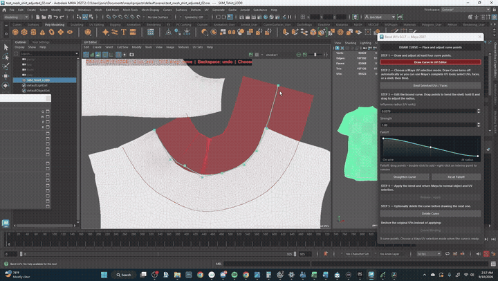
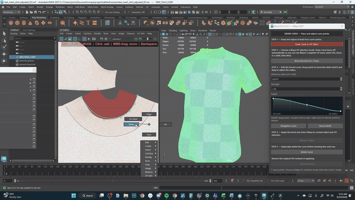

BEND UV SHELLS
WITH A CURVE
DIRECTLY IN THE UV EDITOR
A focused plug-in for shaping complex production UVs with interactive curve control. Draw, bind, bend, and continue with your normal workflow.
LESS PUSHING. MORE CONTROL.
STOP CORRECTING UV ROWS ONE MOVE AT A TIME.
Curved and tapered shells can turn into repeated grab, rotate, relax, and correction passes. Bend UV's gives the selection a temporary curve rig so you can shape the larger flow first, then return to Maya's normal UV tools.
FIVE-STEP WORKFLOW
FROM CURVE TO CLEAN UV FLOW
DRAW & EDIT THE CURVE
Draw directly in Maya’s UV Editor, then add, remove, or reposition the curve CV handles.

TUNE THE FALLOFF
Set the influence radius to control how far the curve reaches across the UVs.

SELECT & BIND
Use Maya’s regular UV, face, or shell selection tools, then bind that exact selection to the curve.

BEND & SHAPE
Shape the shell with the curve. To finish with a straight edge, select the first and last curve CVs, then click Straighten Curve to turn the curve into a line.
APPLY CHANGES & UNFOLD
Click Release / Apply to keep the new UV shape, then use Maya’s Unfold tool to relax the shell while preserving its new direction.
CONTROL THE BEND
SHAPE THE SHELL. TUNE THE INFLUENCE.
CURVE POINTS
Add, remove, and reposition handles.
RADIUS
Hold B and drag to set influence.
STRENGTH
Blend the deformation amount.
CUSTOM FALLOFF
Shape how the bend fades across UVs.
PRODUCTION READY FEATURES
UDIM Support
Seamlessly work across multiple tiles without breaking continuity.
Exact Components
Select exact UVs or faces for localized bending control.
Dense Regions
Optimized processing for high-density production meshes.
Undo/Cancel
Safe workflows with full undo support and a dedicated Release/Apply system to preserve shell integrity.
WINDOWS PC COMPATIBILITY
BUILT FOR WINDOWS. READY FOR FIVE MAYA RELEASES.
Each Maya release gets its own Windows-native build while the workflow, interface, and production behavior stay consistent.
Windows only • Polygon meshes with an existing UV set • One active binding at a time
F.A.Q.
WHICH MAYA VERSIONS ARE SUPPORTED?
Use the Windows package that matches your installed release. See the compatibility section above for the supported versions.
IS BEND UV'S A MAYA PLUG-IN?
Yes. Bend UV's combines compiled Maya plug-in components with its Python interface, installer, and shelf workflow.
CAN I BIND MULTIPLE CURVES?
Currently, only one binding is active at a time to ensure optimal performance and stability.
DOES THIS AUTOMATICALLY UNWRAP?
No, Bend UV's is a transformation tool designed to reshape existing UV layouts, not an auto-unwrapper.
UPGRADE YOUR UV WORKFLOW
VIEW ON GUMROADVERSION 0.3.7 • WINDOWS ONLY